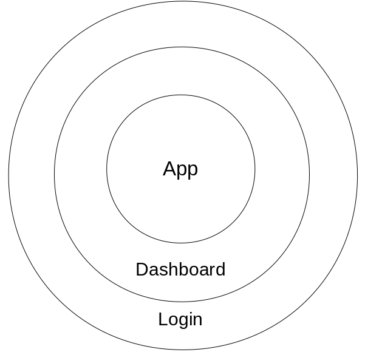
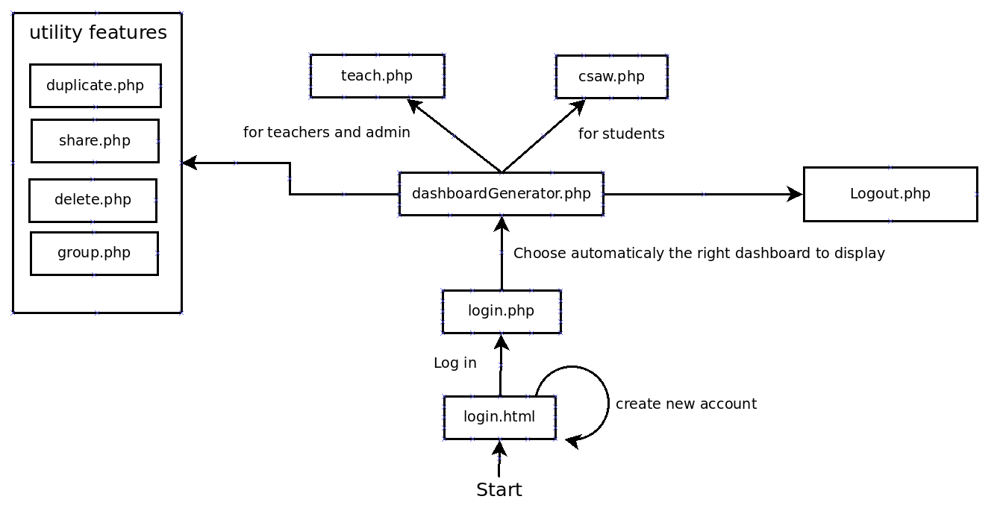
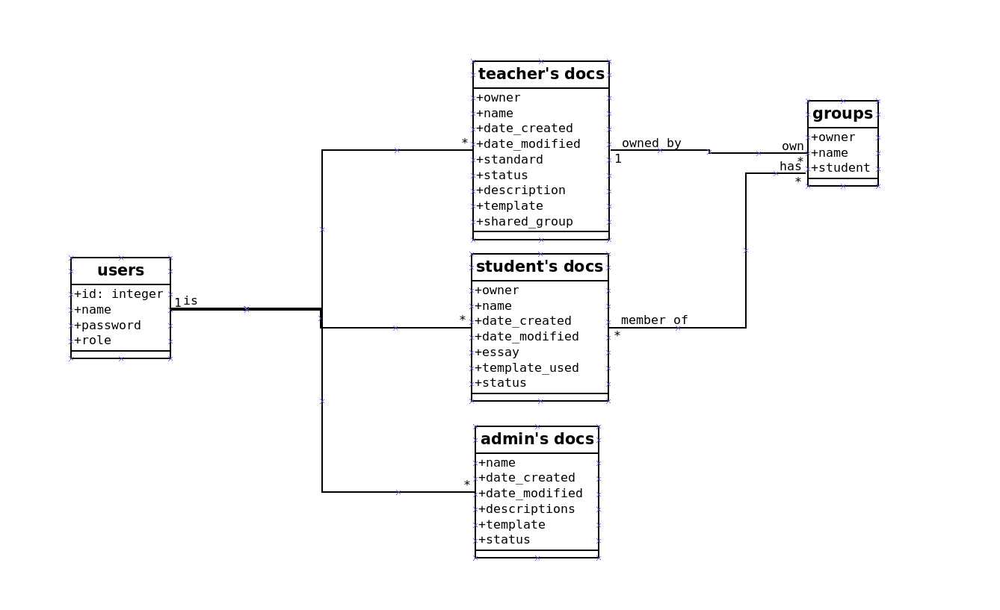

This section explain how the code was thought up. It’s important to know the philosophie behind this project to understand and to manipulate properly the project. there is two subsections: * entity
* implementation
while the entity speaks about what we manipulate, the implementation is more about the way we should write our code to keep the homogeneity of the project.
This project manage mainly two type of entity:
1. users
2. documents
Those two are the main element managed in this project.
There are 3 types of user:
* The Admin * Teachers * Students The Admin is the most powerful user. It is the one who can edit the root template. Teachers account are obviousely teacher who have access to the root template (only duplicate) and their own template that they can share with their students. Student account can access the template of their teacher en start use it to write essays.
There are 3 types of document:
* root templates (Admin’s templates) * teachers’ template * essays The root template are created by the Admin and can be duplicated for the usage of teachers (at this time, it become teacher’s template). Essays are written by the students.
In this project, we will consider four entities that manage the previous entities: * Login * Dashboard * App * Data Of course, we can use more other point of view to make another subdivision. But it’s better to see the project in this way to make it more practical.
The login is a manager who take care of users (registering and login). He is working with the database manager who store and give data. He can accept or decline a registering/login query. To see more, go to: login.html or login.php [link]
The Dashboard manager is there to manage the documents of each users. His goal is to distribute an access and control of templates/essays to a user. To see more, go to: studDash.php, teachDash.php or adminDash.php[link]
It’s a template/essay editor like the dashboard manager. The difference is the scale of modification. When the dashbord manager is working with set of documents, the app work directly with the content of the document. To see more, go to: teach.php [link]
It manage all the registered data (users and documents). Normaly, we don’t have to specify Database like a object, but it’s working with the 3 other managers. That’s why it can be interesting to see his interaction to have a better understanding of the project. To see more, go to: user.db
This section present some rules used to write the code. Those rules are not mandatory but they are important to keep the code in good health and to have more homogeneity. Nevertheless, it will be more eseaier to write code not to mention that we will avoid some pain about the cleanliness of our code.
It is always better to use explicit name when writing function or variables. Okay, we all know that some time, we dont want to think about the name of our variables and if we have to write it many time, it seem really bothersome to write a long name. So we prefer to write one letter size name (like a, b, c, d) to save us some time and effort. It seem fruitful the moment we write it but if we (or somewone else) need to update or correct the code, it is certain that we won’t know any more the role of the variable (or the function) and it would be really pain full to decrypt the code.
That’s why it is strictly discouraged to use that kind of notation. Is it better to use word instead? Yes, and I had better say to use word groups. Because sometime, a variable has a role that specific that it can be difficult to distinguish it from others with a simple word.
So to avoid embiguity, it’s better to use many word for one name.
How to do so? We concatenate all the words but we use delimiter to distinguish them.
We can use underscore to separate word. An example in php
We can use Capitalisation at the beginning of each word. An example in php:
Both technnics are the same, but it’s better to use the underscore methode accordingly to php synthax. A last example:
/*variable name for the user name:
The four cases we have seen in this section
The two last are the better
*/
//wrong: we can't determine it's role by his name
$a= "Alice";
//Not always good: can be ambiguous (it can be the of an essay)
$name= "Alice";
//Good: We know that Alice is a user name
$user_name= "Alice";
//Good: the same as before
$userName= "Alice";There are currently several programming languages. Each one has his own specificity for a given work.
For instance, php and javascript have their own way of extracting string:
There are many other difference between two language and there is even built-in function or option that doesn’t exit to certain language.
The trick is to adapt to the code and do it on a case-by-case basis. In reality that must be the code who need to adapt to the programmer.
It has to align himself to his way of thinking. Why? To have a comprehensible code that can be written to any langage, it must have his own function, modul or data structure that are independent to the language used. It is better to avoid using explicitely buit-in function or methode by encapsulating them in your code architecture.
One of the best way to built a coherent and readable code is to speak/think first and write after that. We just have to think of what we have and what we need. For instance, we want a function that substract the 3 first letter of a string an print the result we could write in a piece of paper:
function print_the_first_three_letters(String string)
print(substract_the_first_three_letters) So we just need a function substract_the_first_three_letters() and print() function. With that, we can implement it in different language like php and javascript:
//substract function in php
function substract_the_first_three_letters($new_string){
return substr($new_string, 0, 3);
}
//print function in php
function print($new_string){
echo $new_string
}//substract function in javascript
function substract_the_first_three_letters(new_string){
return new_string.substr(0, 3);
}
//print function in javascript
function print(new_string){
alert(new_string);
}So if we call print or substract_the_first_three_letters, it will have (so to speak) the same behavior in both two language. There are more advantage. If we need to extract four letter instead of 3, we just have to change the function in the pseudo code and do the same for the implementation. Furthermore this way of writing code allow use tu have reusable function anywere in the code. We think more about the organisation than the implementation means.
This section is a sumary about the “physical” structur of the project. We cover here the files, their extentions and there behaviour.
This project can be subdivided in 3 layers with their own specifications. 1. Login 2. Dashboard 3. App

Each of them has a manager equivalent.
This is the lifecyle of the program through files:

We need to define entities to manage all those task.
